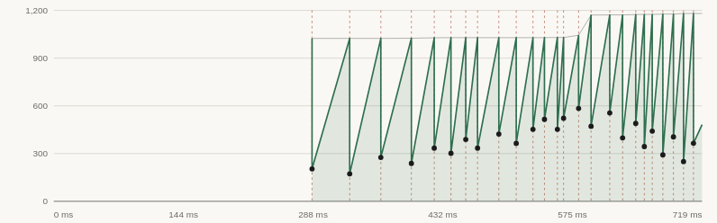

Chapter 13
The garbage collector
What it does §
Collector.roc is the VM's garbage collector, a precise mark and sweep. The VM names its roots, marked follows every reference from them through the cells, and swept turns each unmarked cell into a Freed cell on the free list. A live cell keeps its index, so every reference stays valid across a collection.
The sweep is where memory comes back:
swept : List(Heap.Cell), List(Collector.Mark) -> Collector.Swept
swept = |cells, marks| {
count = cells.len()
var $cells = cells
var $free = NoneFree
var $live = 0
var $at = count
while $at > 0 {
$at = $at - 1
match marks.get($at) {
Ok(Reached) => {
$live = $live + 1
}
Ok(Unreached) => {
$cells = $cells.set($at, Freed($free)) ?? crash "Collector.swept: inside the cells"
$free = FreeAt($at)
}
Err(OutOfBounds) => crash "Collector.swept: a mark for every cell"
}
}
{ cells: $cells, free: $free, live: $live }
Writing Freed over a garbage cell drops the cell that was there, and Roc's reference counting returns what it held (an object's properties, an array's items, a closure's boxes) to the allocator at that write. The heap's list keeps its length, and “Memory strategy” shows an allocation taking a freed place. That is how the programs in js/heaps/ went from peaks of 40 to 164 MB to about 4 MB each (62110109).
Around the copy cliff §
The collector is shaped around Roc's copy cliff, where a write to a list that something else still refers to copies the whole list first (“Roc's copy rule” lists the shapes):
- The marks are a list of their own.
markedreads the cells and writes only its marks and its stack of cells waiting to be visited, each in place, so every list it writes is its own. A mark bit inside each cell would make the first mark copy the heap. - The sweep owns the cells.
collectedtakes the cells out of the machine withlentbefore it callsswept, so eachsetin the sweep is the list's only reference and writes in place:
# The machine after a collection, every cell its roots don't reach freed and
# the next collection scheduled, and how many cells the roots reached.
collected : Machine.Machine -> { machine : Machine.Machine, live : U64 }
collected = |machine| {
marks = Collector.marked(machine.cells, Machine.roots(machine))
{ cells, machine: rest } = Machine.lent(machine)
{ cells: swept, free, live } = Collector.swept(cells, marks)
before = Box.unbox(rest.collecting)
schedule = match before.schedule {
Doubling(_) => Doubling(Collector.least_threshold.max(2 * live))
EveryAllocation(_) => EveryAllocation({ length: swept.len(), free: free })
}
collecting = Box.box({ schedule: schedule, collections: before.collections + 1 })
{
machine: { ..rest, cells: swept, free: free, collecting: collecting },
live: live,
}
}
- The waiting stack reuses its places. A visited cell's place is written over by the next one pushed, so the stack grows only to the mark's deepest point.
A count holds these three only loosely. On the dev build, 08-garbage-in-a-call's collections allocate 0.04 a pass, about one collection every thousand passes (js/controls/expected-dev.txt); one copy of the heap at each collection would add about a thousandth a pass, inside the ladder's tolerance of 0.05 a pass (tools/alloc_ladder.shale). So the guards are unchecked as copies; the heap programs' peaks of about 4 MB (62110109) are the nearest measure.
Its roots, and when it runs §
The roots are the machine's data:
# Every cell the machine names: the live stack's (each frame's slots, its
# boxes and the function it runs, the callers' values waiting, a `finally`'s
# throw held), the builtins', a throw's on its way to a handler, and the
# event queue's (each timer's callback, a frame's closure, the click handler).
# A handler or a waiting frame names only places on the stack.
roots : Machine.Machine -> List(U64)
roots = |machine| {
builtins = Box.unbox(machine.builtins)
var $ids = List.with_capacity(machine.top + builtins.len())
var $at = 0
while $at < machine.top {
$ids = Collector.with_value_root($ids, machine.stack.get($at) ?? crash "Machine.roots: below the stack's top")
$at = $at + 1
}
for builtin in builtins {
$ids = Collector.with_value_root($ids, builtin)
}
match machine.status {
Thrown(boxed) => {
$ids = Collector.with_value_root($ids, Box.unbox(boxed).value)
}
Running | Finished | Faulted(_) => {}
}
events = Box.unbox(machine.events)
for event in events.pending_events {
$ids = match event.happening {
Timed({ timer: _, callback, every: _ }) => Collector.with_value_root($ids, callback)
Framed(closure, _) => $ids.append(closure.scope)
Clicked(_, _) | Collected(_) => $ids
}
}
match events.on_click {
Handler({ handler, site: _ }) => {
$ids = Collector.with_value_root($ids, handler)
}
NoHandler => {}
}
match events.on_collect {
Handler({ handler, site: _ }) => {
$ids = Collector.with_value_root($ids, handler)
}
NoHandler => {}
}
$ids
}
A collection is due when the free list is empty and the heap has reached its threshold. After each one, the threshold is twice what the collection kept, and at least 1,024 cells, so a collection's cost, O(heap), comes to amortized O(1) a cell allocated (unchecked by a timing):
is_collection_due : Machine.Machine -> Bool
is_collection_due = |machine|
match Box.unbox(machine.collecting).schedule {
Doubling(at) => machine.free == NoneFree and machine.cells.len() >= at
EveryAllocation(left) => machine.cells.len() != left.length or machine.free != left.free
}
Between two instructions every value the program holds is in the machine. The one exception is a builtin that runs a callback, such as filter or sort: what it keeps across the callback waits on the stack, where the collections inside the callback see it. A live value that names a freed cell stops the run, since it means a root was missed.
Garbage you can watch §
Two samples show the collector at work. js/tests/55-garbage.js makes 1,800 short-lived pieces, an object, an array and a closure each, in 12 rounds, so the memory view's sawtooth shows its teeth; node holds it like every corpus program, and the page lists it third (a57db770). Here is the memory view's top chart after one run on the page: the cells in use climb as the program allocates and drop at each collection, a dashed line, and the dots are what each collection kept.

onCollect(fn) is a playground extra, like onClick and outside JavaScript: its handler hears each collection after the sweep, as an event that runs between instructions, as a timer does. Node keeps its own collector hidden from a program, so the canvas log 9-garbage-heard holds that sample, in js-canvas and on the page (aa391df8). The handler sits in the boxed event queue, so a program that ignores onCollect pays one match inside each collection and runs every instruction as before.
Two collectors, two worlds §
The compiled programs have a collector of their own, a separate codebase in the same family: a non-moving mark and sweep that collects at twice the last live size, and at least every 8 MiB. Collector.roc works on a Roc list of cells: a reference is an index, the VM names its roots exactly, and Roc's reference counting frees what a Freed cell held. The compiler's, designed in x86/COLLECTOR.md, works on raw memory: each heap block carries a header word of its kind and size, blocks sit in pages of one size class, and the roots are found conservatively, in every word of the machine stack and the registers that looks like a heap address, as Boehm and Weiser's collector for C finds them (1988). The headers and pages came first (a328636), then the mark, the sweep and a torture tier that collects at every allocation (460b606). A floor of 8 MiB held big daddy at 8.8 MB, about a twelfth of node's peak on the same run; floors from 2 to 64 MiB kept its CPU time within 8% (x86/COLLECTOR.md, "Lane 3").